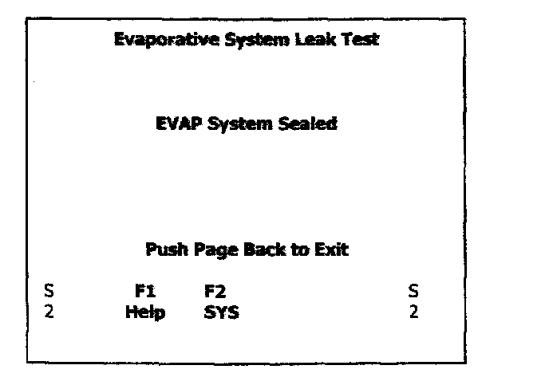

8. On Board System Test
MODE 8 - Request Control of On-Board System, Test, or ComponentFunctional Description The purpose of this mode is to control the operation of an on-board system, test, or component.
Chrysler Group - Evaporative System Leak Test:
First it is applicable only to vehicles that support this test. If the conditions are not proper to run the test, the vehicle may either not respond to the request, or may respond with a reason why the test cannot be run i.e. Denied.
This test mode enables the conditions required to conduct an evaporative system leak test, but does not actually run the test. An example is to close a purge solenoid, preventing leakage if the system is pressurized. The vehicle manufacturer is responsible to determine the criteria to automatically stop the test (Open the solenoid in the example), such as engine running, vehicle speed greater than zero, or exceeding a specified time period. Mode 8 supports closing the canister vent with an external command. Upon receipt of a valid J1979 Mode 8 request from a Scan Tool, reply with a positive response, energize the leak detection pump solenoid, and close the purge solenoid. This effectively seals the evaporative system and allows the service technician to pressurize the system by means of an off-board pressure source applied via the evaporative service port or gas tank cap. Once the system is pressurized, the technician can detect for leaks using a leak detection apparatus such as the Evaporative Emissions Leak Detector. The Evaporative Emission Leak Detector (EELD) Miller Special Tool Number 8404 is capable of visually detecting leaks in the evaporative system. The EELD utilizes shop air and a smoke generator to visually detect leaks down to 0.020 or smaller. The food grade oil used to make the smoke includes a UV trace dye that will leave telltale signs of the leak under a black light. This is helpful when components have to be removed to determine the exact leak location. For detailed test instructions, follow the operator manual packaged with the EELD.
Mode 8 testing is aborted if any vehicle speed is detected, or for ISO 9141-2 packages, an idle K-line is detected for more than 10 seconds (e.g. unplugging the ScanTool or exiting).

There are 3 messages available.
The first states that the test is denied. Usually means the same as being unavailable.
The second message provides further instruction as needed such as engine must be running.
The third message states that the task is being performed.